A quick tour of mclust
Luca Scrucca
04 May 2022
mclust.RmdIntroduction
mclust is a contributed R package for model-based clustering, classification, and density estimation based on finite normal mixture modelling. It provides functions for parameter estimation via the EM algorithm for normal mixture models with a variety of covariance structures, and functions for simulation from these models. Also included are functions that combine model-based hierarchical clustering, EM for mixture estimation and the Bayesian Information Criterion (BIC) in comprehensive strategies for clustering, density estimation and discriminant analysis. Additional functionalities are available for displaying and visualizing fitted models along with clustering, classification, and density estimation results.
This document gives a quick tour of mclust (version
5.4.10) functionalities. It was written in R Markdown, using the knitr package for
production. See help(package="mclust") for further details
and references provided by citation("mclust").
Clustering
data(diabetes)
class <- diabetes$class
table(class)
## class
## Chemical Normal Overt
## 36 76 33
X <- diabetes[,-1]
head(X)
## glucose insulin sspg
## 1 80 356 124
## 2 97 289 117
## 3 105 319 143
## 4 90 356 199
## 5 90 323 240
## 6 86 381 157
clPairs(X, class)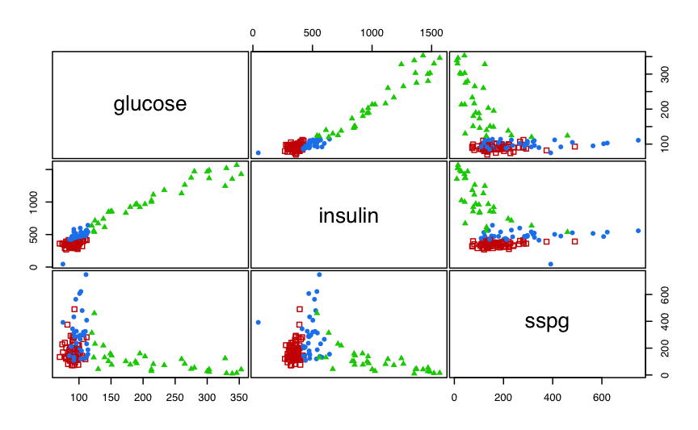
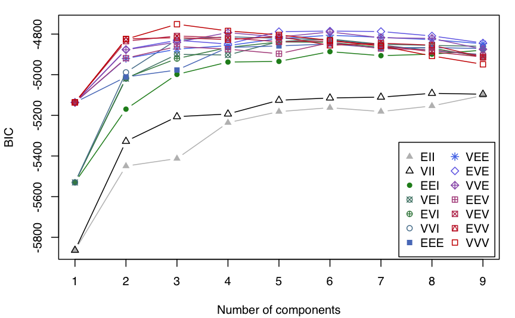
summary(BIC)
## Best BIC values:
## VVV,3 VVV,4 EVE,6
## BIC -4751.316 -4784.32213 -4785.24591
## BIC diff 0.000 -33.00573 -33.92951
mod1 <- Mclust(X, x = BIC)
summary(mod1, parameters = TRUE)
## ----------------------------------------------------
## Gaussian finite mixture model fitted by EM algorithm
## ----------------------------------------------------
##
## Mclust VVV (ellipsoidal, varying volume, shape, and orientation) model with 3
## components:
##
## log-likelihood n df BIC ICL
## -2303.496 145 29 -4751.316 -4770.169
##
## Clustering table:
## 1 2 3
## 81 36 28
##
## Mixing probabilities:
## 1 2 3
## 0.5368974 0.2650129 0.1980897
##
## Means:
## [,1] [,2] [,3]
## glucose 90.96239 104.5335 229.42136
## insulin 357.79083 494.8259 1098.25990
## sspg 163.74858 309.5583 81.60001
##
## Variances:
## [,,1]
## glucose insulin sspg
## glucose 57.18044 75.83206 14.73199
## insulin 75.83206 2101.76553 322.82294
## sspg 14.73199 322.82294 2416.99074
## [,,2]
## glucose insulin sspg
## glucose 185.0290 1282.340 -509.7313
## insulin 1282.3398 14039.283 -2559.0251
## sspg -509.7313 -2559.025 23835.7278
## [,,3]
## glucose insulin sspg
## glucose 5529.250 20389.09 -2486.208
## insulin 20389.088 83132.48 -10393.004
## sspg -2486.208 -10393.00 2217.533
plot(mod1, what = "classification")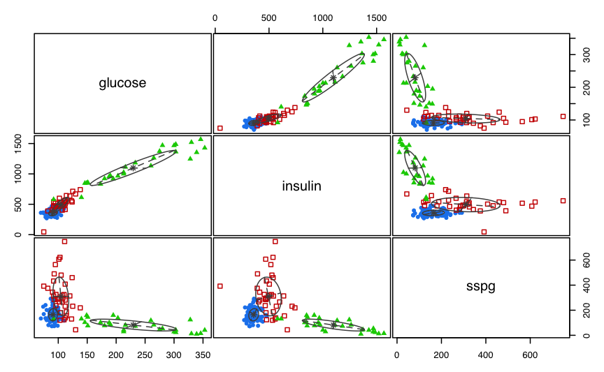
table(class, mod1$classification)
##
## class 1 2 3
## Chemical 9 26 1
## Normal 72 4 0
## Overt 0 6 27
plot(mod1, what = "uncertainty")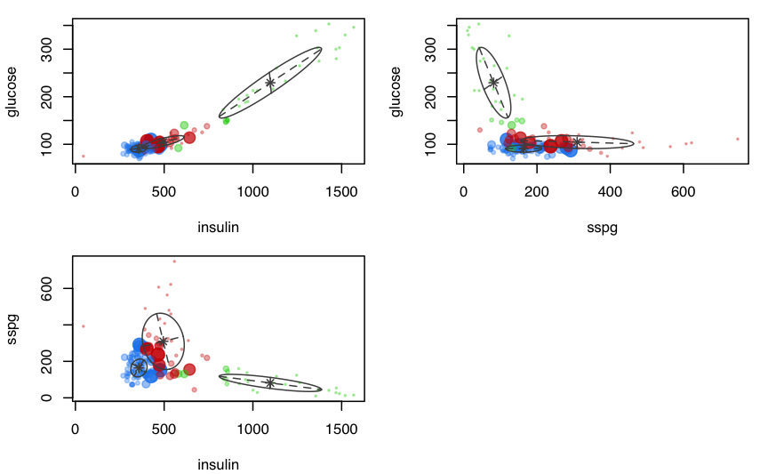
ICL <- mclustICL(X)
summary(ICL)
## Best ICL values:
## VVV,3 EVE,6 EVE,7
## ICL -4770.169 -4797.38232 -4797.50566
## ICL diff 0.000 -27.21342 -27.33677
plot(ICL)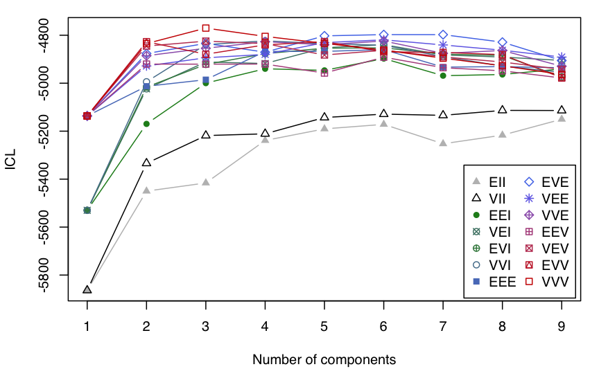
LRT <- mclustBootstrapLRT(X, modelName = "VVV")
LRT
## -------------------------------------------------------------
## Bootstrap sequential LRT for the number of mixture components
## -------------------------------------------------------------
## Model = VVV
## Replications = 999
## LRTS bootstrap p-value
## 1 vs 2 361.16739 0.001
## 2 vs 3 123.49685 0.001
## 3 vs 4 16.76161 0.498Initialisation
EM algorithm is used by mclust for maximum
likelihood estimation. Initialisation of EM is performed using the
partitions obtained from agglomerative hierarchical clustering. For
details see help(mclustBIC) or help(Mclust),
and help(hc).
(hc1 <- hc(X, modelName = "VVV", use = "SVD"))
## Call:
## hc(data = X, modelName = "VVV", use = "SVD")
##
## Model-Based Agglomerative Hierarchical Clustering
## Model name = VVV
## Use = SVD
## Number of objects = 145
BIC1 <- mclustBIC(X, initialization = list(hcPairs = hc1)) # default
summary(BIC1)
## Best BIC values:
## VVV,3 VVV,4 EVE,6
## BIC -4751.316 -4784.32213 -4785.24591
## BIC diff 0.000 -33.00573 -33.92951
(hc2 <- hc(X, modelName = "VVV", use = "VARS"))
## Call:
## hc(data = X, modelName = "VVV", use = "VARS")
##
## Model-Based Agglomerative Hierarchical Clustering
## Model name = VVV
## Use = VARS
## Number of objects = 145
BIC2 <- mclustBIC(X, initialization = list(hcPairs = hc2))
summary(BIC2)
## Best BIC values:
## VVV,3 VVE,3 EVE,4
## BIC -4760.091 -4775.53693 -4793.26143
## BIC diff 0.000 -15.44628 -33.17079
(hc3 <- hc(X, modelName = "EEE", use = "SVD"))
## Call:
## hc(data = X, modelName = "EEE", use = "SVD")
##
## Model-Based Agglomerative Hierarchical Clustering
## Model name = EEE
## Use = SVD
## Number of objects = 145
BIC3 <- mclustBIC(X, initialization = list(hcPairs = hc3))
summary(BIC3)
## Best BIC values:
## VVV,3 VVE,4 VVE,3
## BIC -4751.354 -4757.091572 -4775.69587
## BIC diff 0.000 -5.737822 -24.34212Update BIC by merging the best results:
BIC <- mclustBICupdate(BIC1, BIC2, BIC3)
summary(BIC)
## Best BIC values:
## VVV,3 VVE,4 VVE,3
## BIC -4751.316 -4757.091572 -4775.53693
## BIC diff 0.000 -5.775172 -24.22053
plot(BIC)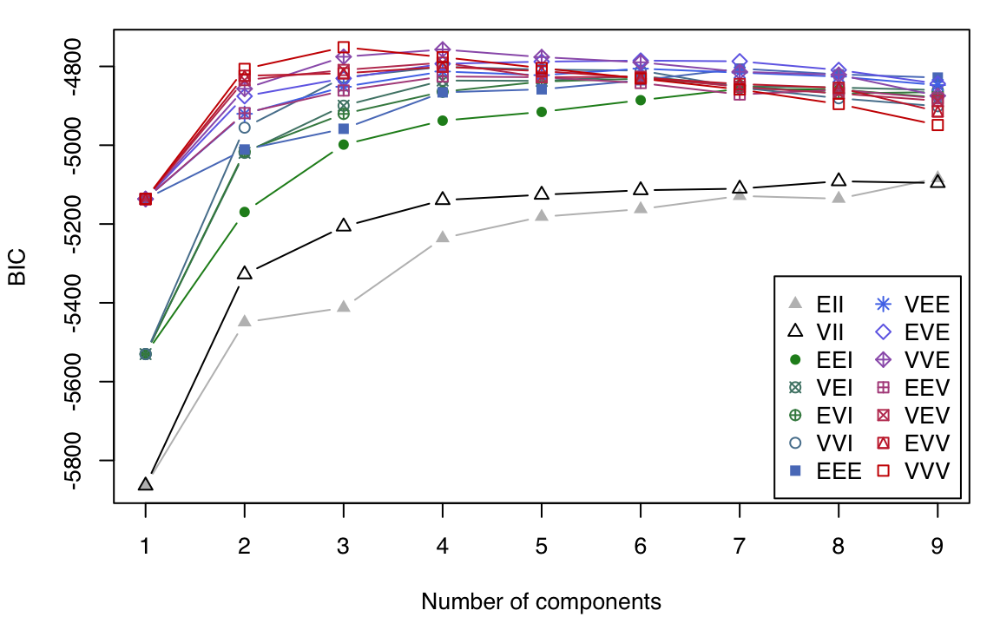
Univariate fit using random starting points obtained by creating
random agglomerations (see help(hcRandomPairs)) and merging
best results:
data(galaxies, package = "MASS")
galaxies <- galaxies / 1000
BIC <- NULL
for(j in 1:20)
{
rBIC <- mclustBIC(galaxies, verbose = FALSE,
initialization = list(hcPairs = hcRandomPairs(galaxies)))
BIC <- mclustBICupdate(BIC, rBIC)
}
summary(BIC)
## Best BIC values:
## V,3 V,4 V,5
## BIC -441.6122 -443.399746 -446.34966
## BIC diff 0.0000 -1.787536 -4.73745
plot(BIC)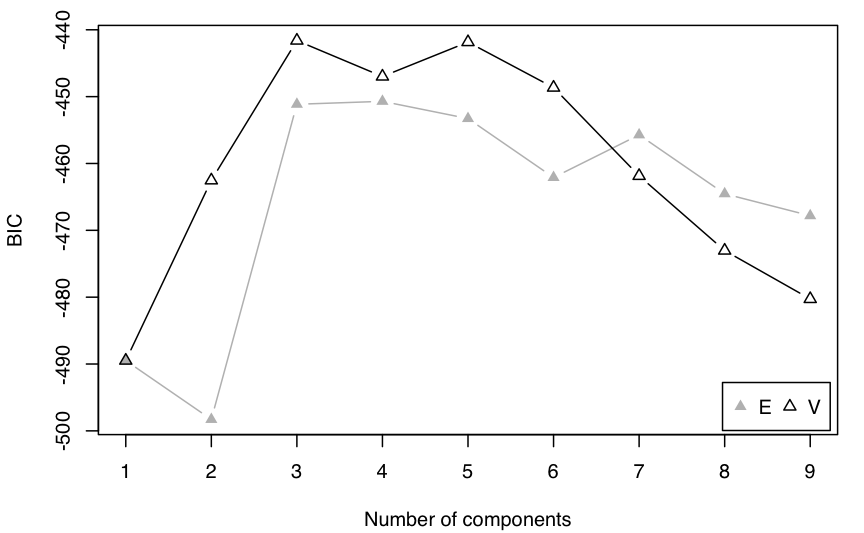
mod <- Mclust(galaxies, x = BIC)
summary(mod)
## ----------------------------------------------------
## Gaussian finite mixture model fitted by EM algorithm
## ----------------------------------------------------
##
## Mclust V (univariate, unequal variance) model with 3 components:
##
## log-likelihood n df BIC ICL
## -203.1792 82 8 -441.6122 -441.6126
##
## Clustering table:
## 1 2 3
## 3 7 72Classification
EDDA
data(iris)
class <- iris$Species
table(class)
## class
## setosa versicolor virginica
## 50 50 50
X <- iris[,1:4]
head(X)
## Sepal.Length Sepal.Width Petal.Length Petal.Width
## 1 5.1 3.5 1.4 0.2
## 2 4.9 3.0 1.4 0.2
## 3 4.7 3.2 1.3 0.2
## 4 4.6 3.1 1.5 0.2
## 5 5.0 3.6 1.4 0.2
## 6 5.4 3.9 1.7 0.4
mod2 <- MclustDA(X, class, modelType = "EDDA")
summary(mod2)
## ------------------------------------------------
## Gaussian finite mixture model for classification
## ------------------------------------------------
##
## EDDA model summary:
##
## log-likelihood n df BIC
## -187.7097 150 36 -555.8024
##
## Classes n % Model G
## setosa 50 33.33 VEV 1
## versicolor 50 33.33 VEV 1
## virginica 50 33.33 VEV 1
##
## Training confusion matrix:
## Predicted
## Class setosa versicolor virginica
## setosa 50 0 0
## versicolor 0 47 3
## virginica 0 0 50
## Classification error = 0.02
## Brier score = 0.0127
plot(mod2, what = "scatterplot")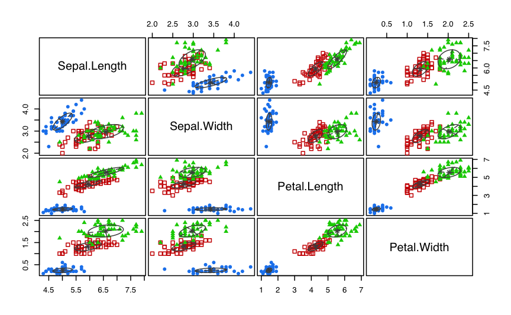
plot(mod2, what = "classification")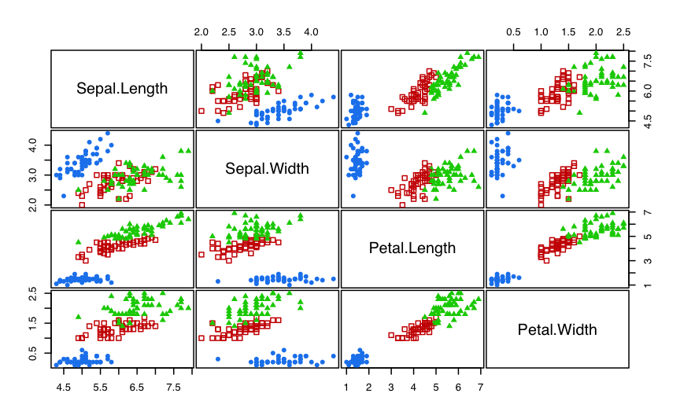
MclustDA
data(banknote)
class <- banknote$Status
table(class)
## class
## counterfeit genuine
## 100 100
X <- banknote[,-1]
head(X)
## Length Left Right Bottom Top Diagonal
## 1 214.8 131.0 131.1 9.0 9.7 141.0
## 2 214.6 129.7 129.7 8.1 9.5 141.7
## 3 214.8 129.7 129.7 8.7 9.6 142.2
## 4 214.8 129.7 129.6 7.5 10.4 142.0
## 5 215.0 129.6 129.7 10.4 7.7 141.8
## 6 215.7 130.8 130.5 9.0 10.1 141.4
mod3 <- MclustDA(X, class)
summary(mod3)
## ------------------------------------------------
## Gaussian finite mixture model for classification
## ------------------------------------------------
##
## MclustDA model summary:
##
## log-likelihood n df BIC
## -646.0801 200 66 -1641.849
##
## Classes n % Model G
## counterfeit 100 50 EVE 2
## genuine 100 50 XXX 1
##
## Training confusion matrix:
## Predicted
## Class counterfeit genuine
## counterfeit 100 0
## genuine 0 100
## Classification error = 0
## Brier score = 0
plot(mod3, what = "scatterplot")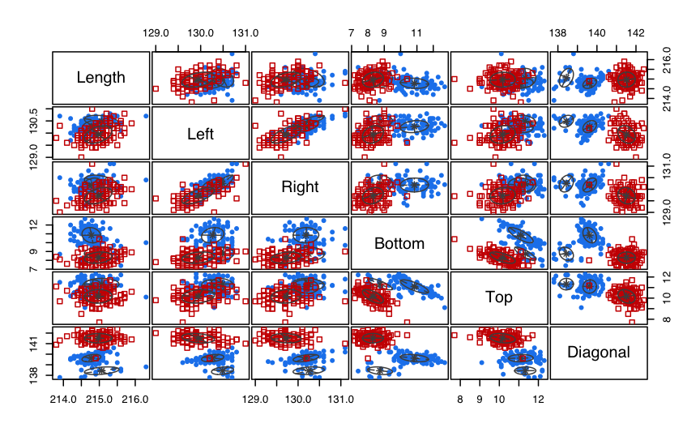
plot(mod3, what = "classification")
Cross-validation error
cv <- cvMclustDA(mod2, nfold = 10)
str(cv)
## List of 6
## $ classification: Factor w/ 3 levels "setosa","versicolor",..: 1 1 1 1 1 1 1 1 1 1 ...
## $ z : num [1:150, 1:3] 1 1 1 1 1 1 1 1 1 1 ...
## ..- attr(*, "dimnames")=List of 2
## .. ..$ : NULL
## .. ..$ : chr [1:3] "setosa" "versicolor" "virginica"
## $ ce : num 0.0267
## $ se.ce : num 0.0109
## $ brier : num 0.0208
## $ se.brier : num 0.00738
unlist(cv[3:6])
## ce se.ce brier se.brier
## 0.026666667 0.010886621 0.020795887 0.007383247
cv <- cvMclustDA(mod3, nfold = 10)
str(cv)
## List of 6
## $ classification: Factor w/ 2 levels "counterfeit",..: 2 2 2 2 2 2 2 2 2 2 ...
## $ z : num [1:200, 1:2] 1.56e-06 3.50e-19 5.41e-28 3.33e-20 2.42e-29 ...
## ..- attr(*, "dimnames")=List of 2
## .. ..$ : NULL
## .. ..$ : chr [1:2] "counterfeit" "genuine"
## $ ce : num 0.005
## $ se.ce : num 0.005
## $ brier : num 0.00514
## $ se.brier : num 0.00498
unlist(cv[3:6])
## ce se.ce brier se.brier
## 0.005000000 0.005000000 0.005135796 0.004980123Density estimation
Univariate
data(acidity)
mod4 <- densityMclust(acidity)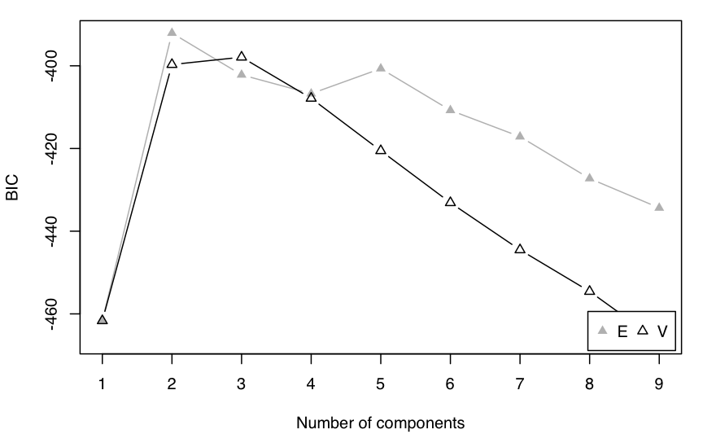
summary(mod4)
## -------------------------------------------------------
## Density estimation via Gaussian finite mixture modeling
## -------------------------------------------------------
##
## Mclust E (univariate, equal variance) model with 2 components:
##
## log-likelihood n df BIC ICL
## -185.9493 155 4 -392.0723 -398.5554
plot(mod4, what = "BIC")
plot(mod4, what = "density", data = acidity, breaks = 15)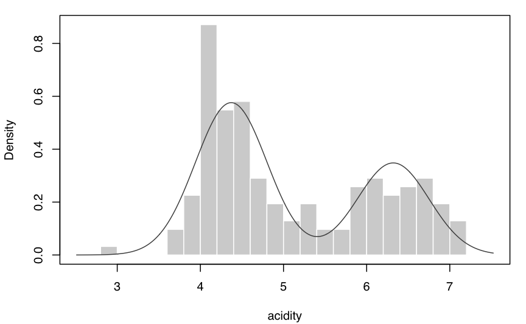
plot(mod4, what = "diagnostic", type = "cdf")
plot(mod4, what = "diagnostic", type = "qq")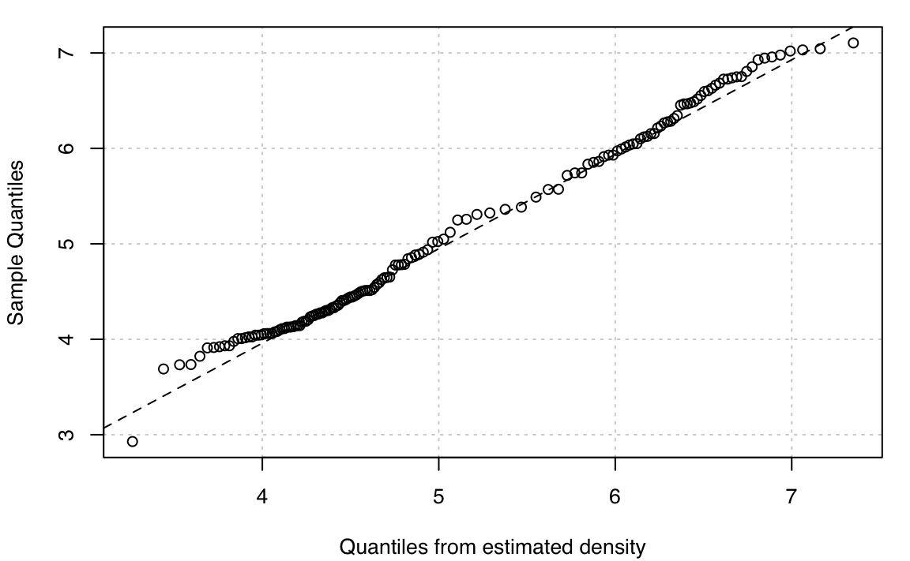
Multivariate
data(faithful)
mod5 <- densityMclust(faithful)
summary(mod5)
## -------------------------------------------------------
## Density estimation via Gaussian finite mixture modeling
## -------------------------------------------------------
##
## Mclust EEE (ellipsoidal, equal volume, shape and orientation) model with 3
## components:
##
## log-likelihood n df BIC ICL
## -1126.326 272 11 -2314.316 -2357.824
plot(mod5, what = "BIC")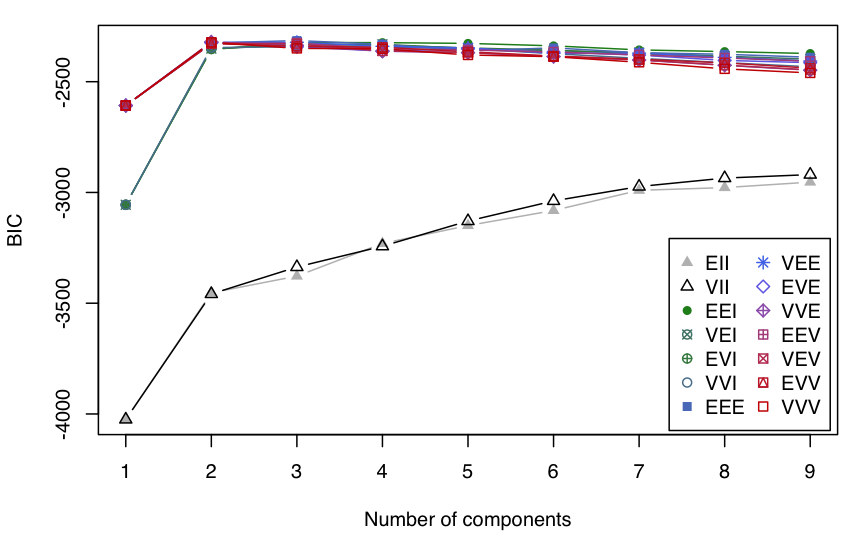
plot(mod5, what = "density", type = "hdr", data = faithful, points.cex = 0.5)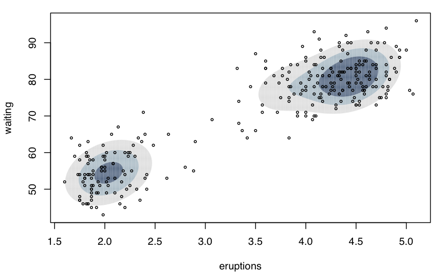
plot(mod5, what = "density", type = "persp")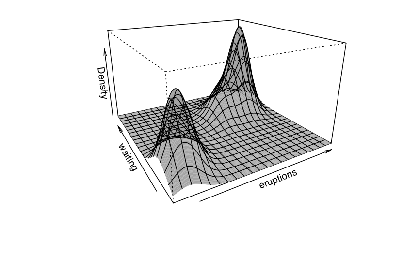
Bootstrap inference
boot1 <- MclustBootstrap(mod1, nboot = 999, type = "bs")
summary(boot1, what = "se")
## ----------------------------------------------------------
## Resampling standard errors
## ----------------------------------------------------------
## Model = VVV
## Num. of mixture components = 3
## Replications = 999
## Type = nonparametric bootstrap
##
## Mixing probabilities:
## 1 2 3
## 0.05185780 0.05058160 0.03559685
##
## Means:
## 1 2 3
## glucose 1.042239 3.444948 16.340816
## insulin 7.554105 29.047203 63.483315
## sspg 7.669033 31.684647 9.926121
##
## Variances:
## [,,1]
## glucose insulin sspg
## glucose 10.78177 51.28084 51.61617
## insulin 51.28084 529.62298 416.38176
## sspg 51.61617 416.38176 623.81098
## [,,2]
## glucose insulin sspg
## glucose 65.66172 616.6785 442.0993
## insulin 616.67852 7279.0671 3240.3558
## sspg 442.09927 3240.3558 7070.4152
## [,,3]
## glucose insulin sspg
## glucose 1045.6542 4178.685 667.2709
## insulin 4178.6846 18873.253 2495.0278
## sspg 667.2709 2495.028 506.8173
summary(boot1, what = "ci")
## ----------------------------------------------------------
## Resampling confidence intervals
## ----------------------------------------------------------
## Model = VVV
## Num. of mixture components = 3
## Replications = 999
## Type = nonparametric bootstrap
## Confidence level = 0.95
##
## Mixing probabilities:
## 1 2 3
## 2.5% 0.4490043 0.1510533 0.1324862
## 97.5% 0.6518326 0.3548749 0.2688038
##
## Means:
## [,,1]
## glucose insulin sspg
## 2.5% 89.13950 344.9890 150.8405
## 97.5% 93.16603 374.7221 181.8322
## [,,2]
## glucose insulin sspg
## 2.5% 98.82567 447.4121 257.9011
## 97.5% 112.28459 561.3273 374.6194
## [,,3]
## glucose insulin sspg
## 2.5% 198.5986 969.6231 63.22103
## 97.5% 263.2932 1226.2654 101.09078
##
## Variances:
## [,,1]
## glucose insulin sspg
## 2.5% 38.65508 1234.198 1514.416
## 97.5% 79.43401 3287.722 4146.024
## [,,2]
## glucose insulin sspg
## 2.5% 88.35268 3514.662 12583.92
## 97.5% 358.15175 31416.557 39228.47
## [,,3]
## glucose insulin sspg
## 2.5% 3377.773 47477.74 1317.041
## 97.5% 7379.344 120297.75 3229.747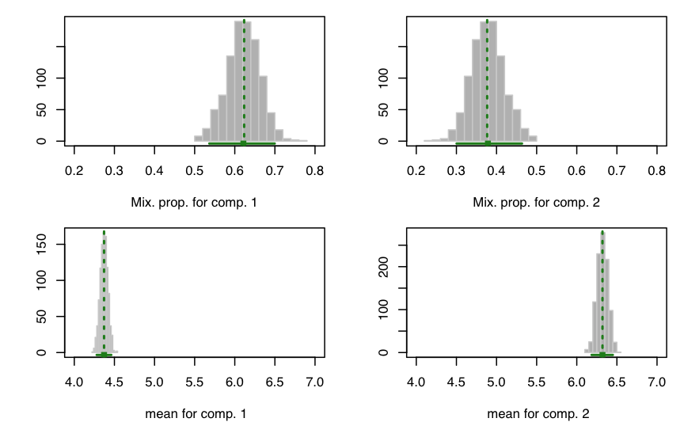
boot4 <- MclustBootstrap(mod4, nboot = 999, type = "bs")
summary(boot4, what = "se")
## ----------------------------------------------------------
## Resampling standard errors
## ----------------------------------------------------------
## Model = E
## Num. of mixture components = 2
## Replications = 999
## Type = nonparametric bootstrap
##
## Mixing probabilities:
## 1 2
## 0.04130937 0.04130937
##
## Means:
## 1 2
## 0.04669993 0.06719883
##
## Variances:
## 1 2
## 0.02376885 0.02376885
summary(boot4, what = "ci")
## ----------------------------------------------------------
## Resampling confidence intervals
## ----------------------------------------------------------
## Model = E
## Num. of mixture components = 2
## Replications = 999
## Type = nonparametric bootstrap
## Confidence level = 0.95
##
## Mixing probabilities:
## 1 2
## 2.5% 0.5364895 0.3004131
## 97.5% 0.6995869 0.4635105
##
## Means:
## 1 2
## 2.5% 4.279055 6.184439
## 97.5% 4.461108 6.449465
##
## Variances:
## 1 2
## 2.5% 0.1395796 0.1395796
## 97.5% 0.2317769 0.2317769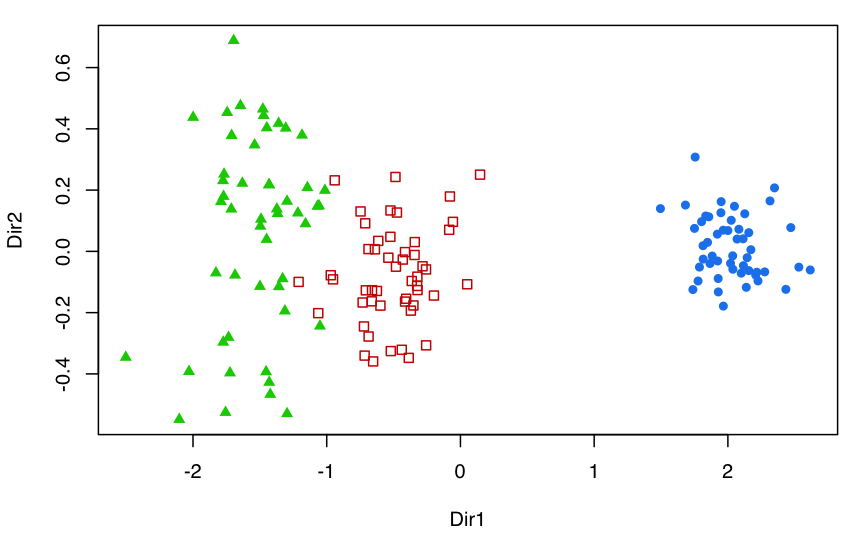
Dimension reduction
Clustering
mod1dr <- MclustDR(mod1)
summary(mod1dr)
## -----------------------------------------------------------------
## Dimension reduction for model-based clustering and classification
## -----------------------------------------------------------------
##
## Mixture model type: Mclust (VVV, 3)
##
## Clusters n
## 1 81
## 2 36
## 3 28
##
## Estimated basis vectors:
## Dir1 Dir2
## glucose 0.764699 0.86359
## insulin -0.643961 -0.22219
## sspg 0.023438 -0.45260
##
## Dir1 Dir2
## Eigenvalues 1.2629 0.35218
## Cum. % 78.1939 100.00000
plot(mod1dr, what = "pairs")
plot(mod1dr, what = "boundaries", ngrid = 200)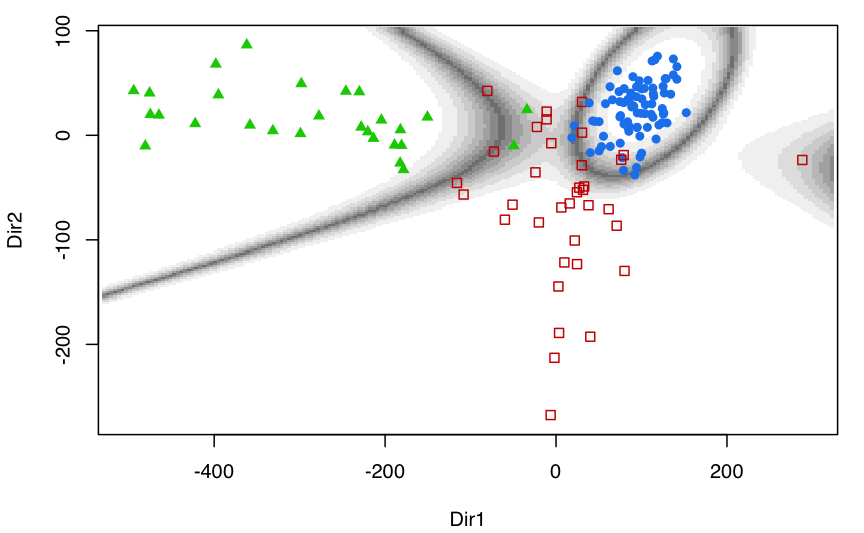
mod1dr <- MclustDR(mod1, lambda = 1)
summary(mod1dr)
## -----------------------------------------------------------------
## Dimension reduction for model-based clustering and classification
## -----------------------------------------------------------------
##
## Mixture model type: Mclust (VVV, 3)
##
## Clusters n
## 1 81
## 2 36
## 3 28
##
## Estimated basis vectors:
## Dir1 Dir2
## glucose 0.764699 0.86359
## insulin -0.643961 -0.22219
## sspg 0.023438 -0.45260
##
## Dir1 Dir2
## Eigenvalues 1.2629 0.35218
## Cum. % 78.1939 100.00000
plot(mod1dr, what = "scatterplot")
plot(mod1dr, what = "boundaries", ngrid = 200)Classification
mod2dr <- MclustDR(mod2)
summary(mod2dr)
## -----------------------------------------------------------------
## Dimension reduction for model-based clustering and classification
## -----------------------------------------------------------------
##
## Mixture model type: EDDA
##
## Classes n Model G
## setosa 50 VEV 1
## versicolor 50 VEV 1
## virginica 50 VEV 1
##
## Estimated basis vectors:
## Dir1 Dir2
## Sepal.Length 0.20874 -0.006532
## Sepal.Width 0.38620 -0.586611
## Petal.Length -0.55401 0.252562
## Petal.Width -0.70735 -0.769453
##
## Dir1 Dir2
## Eigenvalues 1.8813 0.098592
## Cum. % 95.0204 100.000000
plot(mod2dr, what = "scatterplot")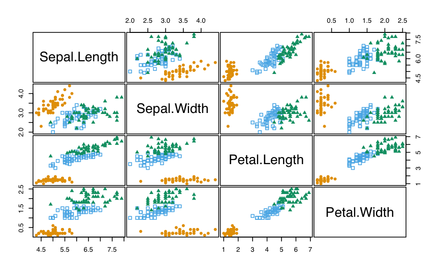
plot(mod2dr, what = "boundaries", ngrid = 200)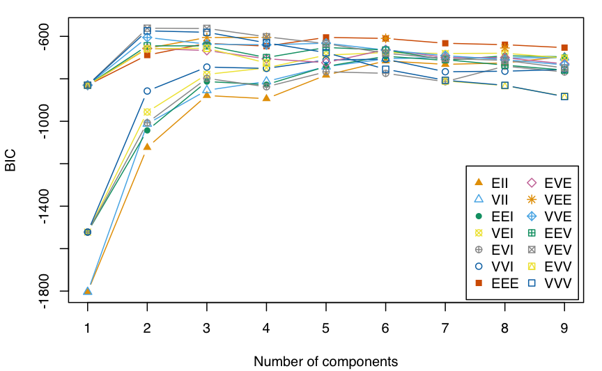
mod3dr <- MclustDR(mod3)
summary(mod3dr)
## -----------------------------------------------------------------
## Dimension reduction for model-based clustering and classification
## -----------------------------------------------------------------
##
## Mixture model type: MclustDA
##
## Classes n Model G
## counterfeit 100 EVE 2
## genuine 100 XXX 1
##
## Estimated basis vectors:
## Dir1 Dir2
## Length -0.07016 -0.25690
## Left -0.36888 -0.19963
## Right 0.29525 -0.10111
## Bottom 0.54683 0.46254
## Top 0.55720 0.41370
## Diagonal -0.40290 0.70628
##
## Dir1 Dir2
## Eigenvalues 1.7188 1.0607
## Cum. % 61.8373 100.0000
plot(mod3dr, what = "scatterplot")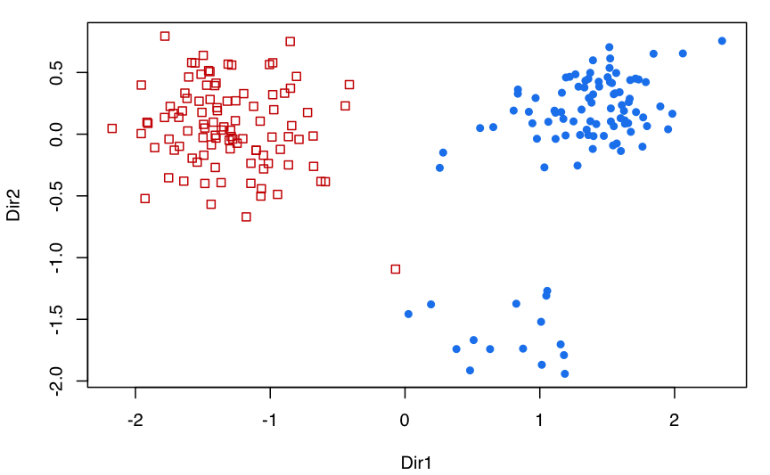
plot(mod3dr, what = "boundaries", ngrid = 200)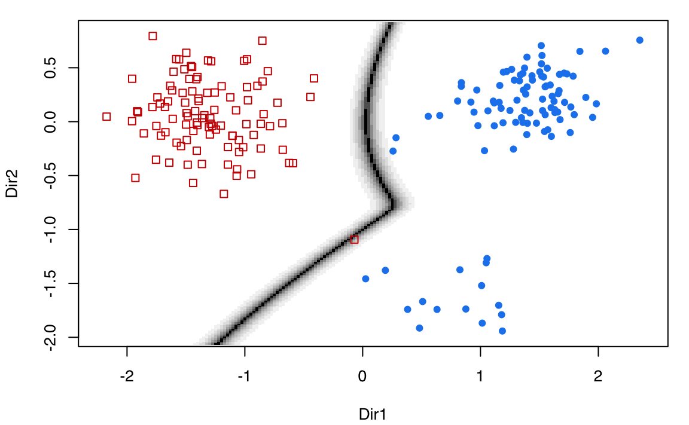
Using colorblind-friendly palettes
Most of the graphs produced by mclust use colors that by default are defined in the following options:
mclust.options("bicPlotColors")
## EII VII EEI EVI VEI VVI EEE VEE
## "gray" "black" "#218B21" "#41884F" "#508476" "#58819C" "#597DC3" "#5178EA"
## EVE VVE EEV VEV EVV VVV E V
## "#716EE7" "#9B60B8" "#B2508B" "#C03F60" "#C82A36" "#CC0000" "gray" "black"
mclust.options("classPlotColors")
## [1] "dodgerblue2" "red3" "green3" "slateblue"
## [5] "darkorange" "skyblue1" "violetred4" "forestgreen"
## [9] "steelblue4" "slategrey" "brown" "black"
## [13] "darkseagreen" "darkgoldenrod3" "olivedrab" "royalblue"
## [17] "tomato4" "cyan2" "springgreen2"The first option controls colors used for plotting BIC, ICL, etc. curves, whereas the second option is used to assign colors for indicating clusters or classes when plotting data.
Starting with R version 4.0, the function can be used for retrieving colors from some pre-defined palettes. For instance
palette.colors(palette = "Okabe-Ito")returns a color-blind-friendly palette for individuals suffering from protanopia or deuteranopia, the two most common forms of inherited color blindness. For earlier versions of R such palette can be defined as:
cbPalette <- c("#000000", "#E69F00", "#56B4E9", "#009E73", "#F0E442", "#0072B2",
"#D55E00", "#CC79A7", "#999999")and then assigned to the mclust options as follows:
bicPlotColors <- mclust.options("bicPlotColors")
bicPlotColors[1:14] <- c(cbPalette, cbPalette[1:5])
mclust.options("bicPlotColors" = bicPlotColors)
mclust.options("classPlotColors" = cbPalette[-1])
clPairs(iris[,-5], iris$Species)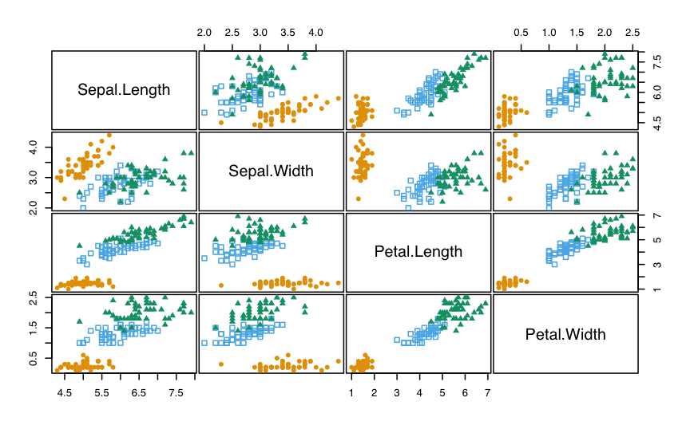
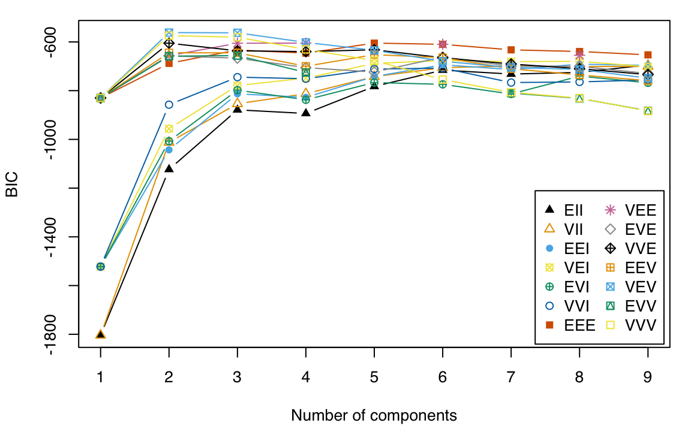
plot(mod, what = "classification")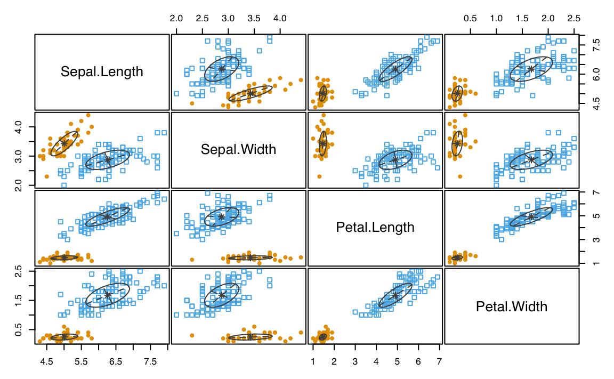
If needed, users can easily define their own palettes following the same procedure outlined above.
References
Scrucca L., Fop M., Murphy T. B. and Raftery A. E. (2016) mclust 5: clustering, classification and density estimation using Gaussian finite mixture models, The R Journal, 8/1, pp. 205-233. https://journal.r-project.org/archive/2016/RJ-2016-021/RJ-2016-021.pdf
Fraley C. and Raftery A. E. (2002) Model-based clustering, discriminant analysis and density estimation, Journal of the American Statistical Association, 97/458, pp. 611-631.
Fraley C., Raftery A. E., Murphy T. B. and Scrucca L. (2012) mclust Version 4 for R: Normal Mixture Modeling for Model-Based Clustering, Classification, and Density Estimation. Technical Report No. 597, Department of Statistics, University of Washington.
sessionInfo()
## R version 4.2.0 (2022-04-22)
## Platform: x86_64-apple-darwin17.0 (64-bit)
## Running under: macOS Big Sur/Monterey 10.16
##
## Matrix products: default
## BLAS: /Library/Frameworks/R.framework/Versions/4.2/Resources/lib/libRblas.0.dylib
## LAPACK: /Library/Frameworks/R.framework/Versions/4.2/Resources/lib/libRlapack.dylib
##
## locale:
## [1] en_GB.UTF-8/en_GB.UTF-8/en_GB.UTF-8/C/en_GB.UTF-8/en_GB.UTF-8
##
## attached base packages:
## [1] stats graphics grDevices utils datasets methods base
##
## other attached packages:
## [1] mclust_5.4.10 knitr_1.39
##
## loaded via a namespace (and not attached):
## [1] rprojroot_2.0.3 digest_0.6.29 R6_2.5.1
## [4] jsonlite_1.8.0 magrittr_2.0.3 evaluate_0.15
## [7] highr_0.9 stringi_1.7.6 rlang_1.0.2
## [10] cachem_1.0.6 cli_3.3.0 rstudioapi_0.13.0-9000
## [13] fs_1.5.2 jquerylib_0.1.4 bslib_0.3.1
## [16] rmarkdown_2.14 pkgdown_2.0.3 desc_1.4.1
## [19] tools_4.2.0 stringr_1.4.0 purrr_0.3.4
## [22] yaml_2.3.5 xfun_0.30 fastmap_1.1.0
## [25] compiler_4.2.0 memoise_2.0.1 htmltools_0.5.2
## [28] sass_0.4.1